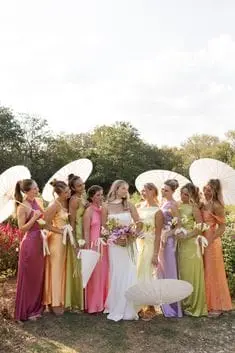
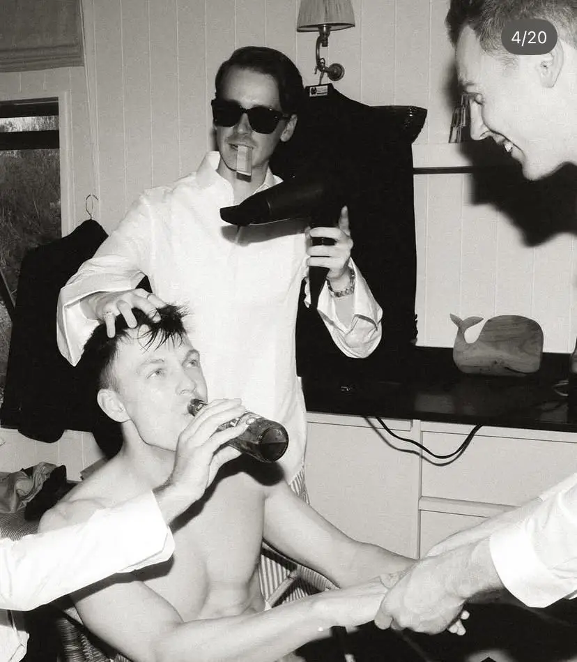
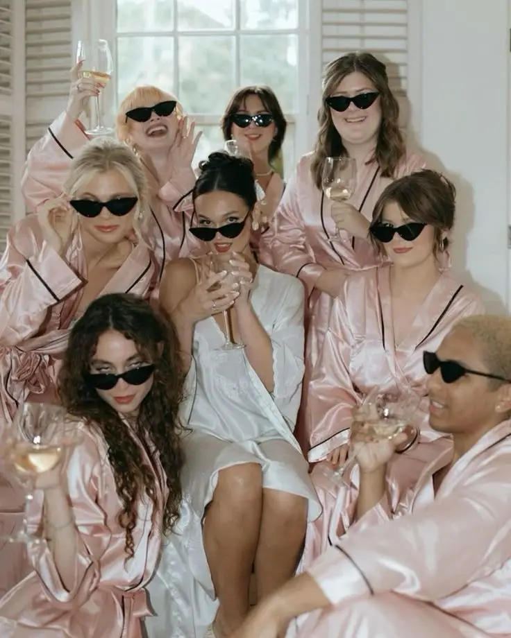
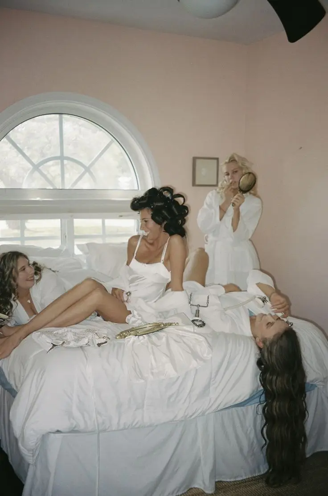
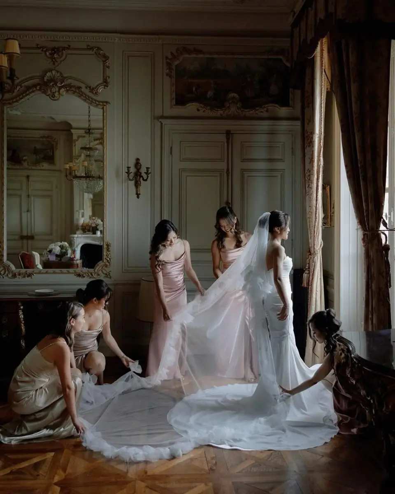
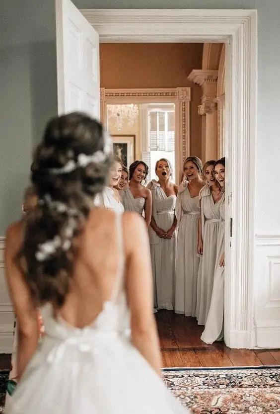
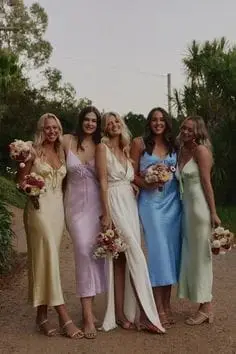
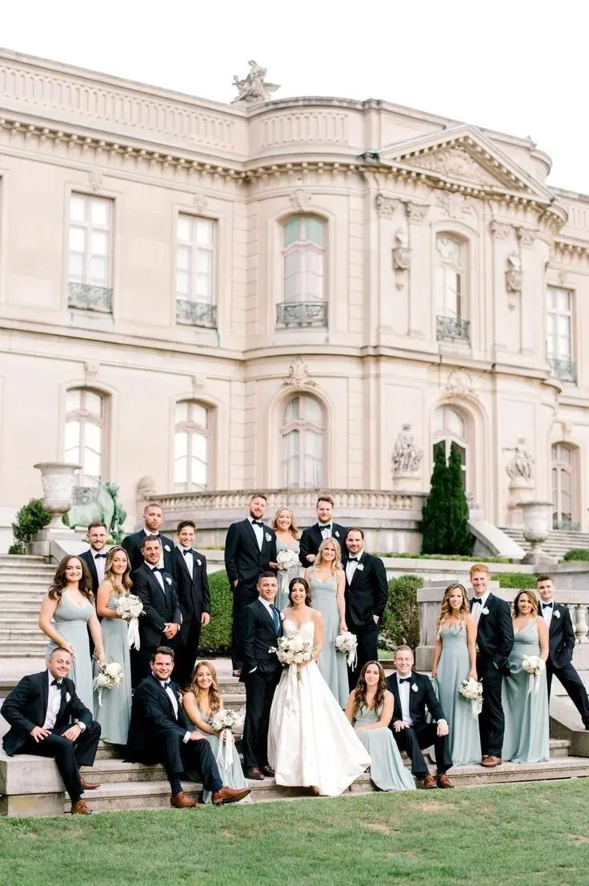

On le sait : vos témoins et demoiselles d’honneur ne sont pas “juste là pour faire joli sur les photos”. Ce sont vos alliés, vos soutiens émotionnels, vos organisateurs de dernière minute, vos garde-fous anti-stress… et parfois même vos thérapeutes officiels pendant les préparatifs.
Parce qu’organiser un mariage, que ce soit à Bordeaux, dans un domaine du Médoc, sur le Bassin d’Arcachon ou ailleurs en Nouvelle-Aquitaine, ce n’est pas seulement choisir une robe et un traiteur. C’est aussi gérer des émotions, des imprévus, des doutes, et parfois des moments de panique devant un plan de table.
Et dans tout ça, vos témoins et demoiselles d’honneur sont là. Ils répondent aux messages à toute heure, vous accompagnent aux essayages, organisent l’EVJF, gèrent les petites urgences du jour J, et vous rappellent de respirer quand vous êtes à deux doigts de craquer.
Alors pourquoi leur offrir un simple tote bag avec “Team Bride” et un gloss random ?
Spoiler : ils méritent mieux.
Aujourd’hui, en tant que wedding planner à Bordeaux, je vous propose une idée ultra tendance et surtout très touchante : le Kit d’expérience, une box pensée pour transformer leur rôle en aventure mémorable. Pas seulement des objets, mais une vraie attention. Une façon de dire : “Je veux que tu vives ça avec moi, et je veux que tu te sentes important(e).”
Pourquoi offrir un Kit d’expérience à vos témoins ?



Offrir un Kit d’expérience à vos témoins et demoiselles d’honneur, ce n’est pas seulement une idée tendance : c’est une attention forte qui donne immédiatement du sens à leur rôle. Aujourd’hui, de plus en plus de futurs mariés souhaitent aller plus loin que le simple cadeau symbolique, et créer un vrai moment d’émotion au début des préparatifs.
Ce type de box est une façon élégante de marquer le coup et de rendre la demande officielle beaucoup plus mémorable. Au lieu d’un message rapide ou d’un simple “Tu veux être mon témoin ?”, vous transformez cette annonce en un instant précieux, qui restera gravé dans leur mémoire.
C’est aussi un excellent moyen de créer un esprit d’équipe dès le départ. Le mariage est une aventure qui se construit sur plusieurs mois, parfois sur plus d’un an, et vos témoins font partie des personnes les plus impliquées dans cette période. Leur offrir un kit bien pensé permet de les intégrer pleinement à l’organisation et de renforcer le lien entre vous. Cela donne une dynamique positive au groupe, et instaure une ambiance complice autour des préparatifs.
Un autre avantage important est l’aspect souvenir. Le Kit d’expérience devient un objet que vos témoins garderont, et qui leur rappellera cette période unique. Il permet aussi de créer de belles photos et de capturer des instants spontanés, notamment au moment où ils découvrent la box ou lors de moments clés comme l’EVJF ou les préparatifs du jour J.
Ce cadeau est également une manière très forte de valoriser leur rôle. Être témoin ou demoiselle d’honneur ne se limite pas à signer à la mairie ou à porter une tenue assortie. Cela signifie être présent, rassurer, aider, organiser, et parfois gérer les imprévus. Offrir un kit personnalisé montre que vous reconnaissez leur implication et que vous leur accordez une place essentielle dans votre mariage.
Enfin, et c’est un point souvent sous-estimé, ce kit peut réellement vous simplifier la vie. Un témoin bien préparé est un témoin efficace. En lui donnant dès le départ des éléments utiles, des informations ou même une “mission” claire, vous réduisez votre charge mentale et vous vous assurez d’être entouré(e) de personnes prêtes à vous soutenir de manière concrète.
En résumé, offrir un Kit d’expérience pour témoins est une idée à la fois moderne, pratique et émotionnelle. C’est un cadeau qui crée du lien, qui marque le début des préparatifs et qui transforme leur présence à vos côtés en véritable expérience. Une attention simple, mais puissante, qui rend votre mariage encore plus unique.
La liste originale d’objets à glisser dans votre kit (avec le vrai “pourquoi”)
1. Une lettre personnalisée (indispensable)
Oui, c’est simple. Mais c’est clairement le cœur du kit d’expérience.
C’est même l’élément le plus important, celui qui transforme une simple box en un cadeau profondément émotionnel.
Une lettre personnalisée permet de rendre la demande officielle beaucoup plus marquante. Elle donne du sens à votre geste et montre à votre témoin ou demoiselle d’honneur qu’il ou elle n’a pas été choisi(e) au hasard. Ce n’est pas un “rôle pratique”, c’est une place spéciale dans votre histoire.
Pourquoi c’est essentiel ?
Parce qu’un objet peut être joli, utile ou tendance… mais une lettre touche directement le cœur. C’est souvent la seule chose qu’ils garderont pendant des années, parfois même toute une vie. Elle devient un souvenir intime, précieux, que l’on relit avec émotion bien après le mariage.
C’est aussi une manière de créer un moment fort dès le début des préparatifs. Avant même les essayages, l’EVJF ou le grand jour, vous installez une connexion sincère et authentique avec votre équipe.
Astuce wedding planner
Pour que la lettre ait un vrai impact, évitez les phrases trop générales. Soyez précis(e), personnel(le), et parlez avec le cœur.
Vous pouvez écrire une phrase simple mais puissante comme :
“Si je t’ai choisi(e), c’est parce que…”
Puis enchaîner avec une ou deux qualités ou souvenirs concrets : une situation où cette personne vous a soutenu(e), une anecdote, un moment marquant de votre amitié ou de votre relation.
C’est ce genre de détail qui rend la lettre unique, et qui déclenche souvent une réaction immédiate : sourire, émotion… et parfois même quelques larmes.
En résumé, la lettre personnalisée est bien plus qu’un mot : c’est la preuve que leur rôle compte vraiment, et que vous souhaitez vivre cette aventure avec eux, pleinement.





2. Une mini “mission card” : leur rôle expliqué façon fun
Parmi les idées les plus originales à glisser dans un kit d’expérience pour témoins ou demoiselles d’honneur, la “mission card” fait toujours son petit effet. Le principe est simple : une petite carte, joliment imprimée, qui liste leurs missions officielles pendant les préparatifs et le jour du mariage.
Cela peut être présenté comme une carte d’agent secret, une checklist élégante ou même une “fiche de poste” revisitée version mariage.
Exemples de missions à inscrire
Garder la mariée calme (et lui rappeler qu’elle est magnifique, même en pleine crise de stress)
Vérifier le rouge à lèvres et les retouches beauté
Gérer les petites urgences de dernière minute
S’assurer que tout le monde est à l’heure
Empêcher l’ex toxique d’approcher (optionnel… mais souvent utile)
L’idée est de rester léger, drôle et complice, tout en montrant qu’ils ont un rôle important à jouer.
Pourquoi c’est une excellente idée ?
Parce que cette carte permet de dédramatiser. Elle transforme une responsabilité parfois impressionnante en une mission amusante, presque valorisante. Vos témoins se sentent impliqués, utiles, et surtout fiers d’être “dans l’équipe”. C’est aussi une manière subtile de leur donner des repères. Certains témoins ne savent pas toujours exactement ce qu’on attend d’eux, et cette carte leur permet de comprendre leur rôle sans pression.
En plus, c’est un détail qui plaît énormément sur le moment, car cela crée immédiatement une ambiance joyeuse et dynamique. Ils se sentent littéralement “dans le film”, comme s’ils entraient officiellement dans les coulisses de votre mariage.
Bonus wedding planner
Pour un rendu encore plus esthétique, vous pouvez ajouter un ton humoristique, un petit slogan, ou un code couleur en lien avec votre thème de mariage. Cela rend la mission card encore plus personnalisée et cohérente avec l’univers de votre événement. C’est un petit objet simple, mais qui marque les esprits et qui renforce l’esprit d’équipe dès le début des préparatifs.
3. Un carnet “souvenirs de mariage”
Offrir à vos témoins ou demoiselles d’honneur un joli carnet personnalisé est bien plus qu’un simple objet. C’est un espace où ils pourront inscrire toutes les étapes importantes de votre mariage, transformer leurs moments partagés avec vous en souvenirs tangibles, et conserver une trace unique de cette aventure.
Dans ce carnet, ils pourront noter les anecdotes des préparatifs, les idées pour l’EVJF ou l’EVG, leurs émotions le jour J, ainsi que des messages personnels pour vous. Chaque page devient ainsi un témoignage vivant de leur implication et de leur rôle dans votre mariage.
Pourquoi offrir un carnet à vos témoins et demoiselles d’honneur ? Parce qu’ils vivent l’histoire à vos côtés et que ce carnet peut rapidement devenir un trésor émotionnel, un objet qu’ils garderont précieusement pendant des années, et qui leur rappellera votre complicité et l’importance de leur présence.
Pour aller plus loin, vous pouvez opter pour une version premium du carnet, avec une page spéciale “promesse” ou “souhait pour le couple”, où ils peuvent écrire un mot pour vous accompagner dans votre nouvelle vie à deux. Cela transforme le carnet en un véritable souvenir personnalisé, à la fois sentimental et précieux, et renforce le lien unique qui vous unit à vos témoins.
Un carnet souvenirs de mariage n’est donc pas seulement un objet pratique pour organiser et noter, c’est un symbole fort de gratitude et d’attachement, qui fait de vos témoins et demoiselles d’honneur des acteurs essentiels de votre célébration.


4. Un mini kit SOS mariage (le kit de survie chic)
Le mini kit SOS mariage, également appelé kit de survie chic, est un indispensable pour vos témoins et demoiselles d’honneur. Il s’agit d’une petite pochette soigneusement préparée contenant tout le nécessaire pour faire face aux imprévus du jour J. Vous pouvez y glisser des pansements, épingles à nourrice, mini déodorant, chewing-gum, mouchoirs, lingettes détachantes, mini spray anti-buée pour lunettes et même un petit kit de couture pour les urgences vestimentaires.
Pourquoi offrir un kit SOS mariage à vos témoins et demoiselles d’honneur ? Parce qu’un mariage, aussi beau et mémorable soit-il, peut parfois se transformer en véritable zone de guerre émotionnelle et textile. Robes coincées, talons cassés, maquillage qui coule ou lunettes embuées… autant de petits incidents qui peuvent devenir stressants si personne n’est préparé.
Offrir un mini kit SOS mariage montre à vos témoins qu’ils ont un rôle important et responsable. C’est un symbole fort : celui d’un témoin prêt à tout, capable de gérer les petites crises et de vous aider à profiter pleinement de chaque moment sans stress. Ce kit transforme leur mission en une expérience concrète et valorisante, tout en ajoutant une touche élégante et pratique à leur rôle.
Grâce à ce kit, vos témoins et demoiselles d’honneur se sentiront utiles, préparés et pleinement impliqués dans votre célébration, ce qui renforcera leur engagement et leur enthousiasme tout au long des préparatifs et du jour J.
5. Une bougie “spéciale préparatifs”


Offrir une bougie personnalisée à vos témoins et demoiselles d’honneur peut sembler simple, mais c’est en réalité un geste très symbolique. La bougie devient un petit rituel précieux pendant les préparatifs du mariage, un moment pour se recentrer et se connecter à vous avant le grand jour. Vous pouvez ajouter une étiquette personnalisée avec un message humoristique ou tendre, par exemple : “Pour survivre aux moodboards, aux plans de table et aux crises existentielles.”
Pourquoi offrir une bougie à vos témoins ? Parce que cela crée un rituel émotionnel. Lorsqu’ils l’allument, ils se sentent impliqués dans vos préparatifs et connectés à votre histoire. C’est une manière simple mais efficace de leur montrer qu’ils ont un rôle important et qu’ils font partie de cette aventure unique.
Pour que l’expérience soit complète, choisissez un parfum délicat et élégant, qui rappelle l’univers du mariage. Les senteurs recommandées incluent le coton, la vanille ou les fleurs blanches, des fragrances douces et intemporelles qui apportent une sensation de calme et de bien-être pendant les préparatifs.
Une bougie “spéciale préparatifs” n’est donc pas seulement un objet décoratif, c’est un symbole de gratitude, d’attention et de partage. Elle transforme un simple moment en souvenir mémorable pour vos témoins et demoiselles d’honneur, et elle reste un petit rappel de votre complicité bien après le mariage.
6. Une playlist imprimée ou QR code “Team Mariage”
Offrir à vos témoins et demoiselles d’honneur une playlist personnalisée est une idée originale qui combine praticité et émotion. Vous pouvez préparer une petite carte avec un QR code Spotify ou une clé USB contenant des morceaux soigneusement sélectionnés pour accompagner toutes les étapes de votre mariage. La playlist peut inclure des chansons pour l’EVJF, des musiques relaxantes pour décompresser, une sélection “anti-stress” et même des morceaux entraînants pour danser et se préparer à verser quelques larmes de bonheur.
Pourquoi offrir une playlist à vos témoins ? Parce que la musique a ce pouvoir unique d’ancrer les souvenirs. Chaque chanson deviendra une petite capsule temporelle qui rappellera à vos proches les moments forts de vos préparatifs et du jour J. Les chansons choisies évoqueront l’énergie des répétitions, les fous rires des essayages et la complicité partagée pendant l’EVJF ou l’EVG.
Une playlist personnalisée transforme le rôle de vos témoins en une expérience sensorielle complète. Ils se sentiront impliqués dans votre mariage de manière originale et personnelle, tout en ayant un souvenir durable qu’ils pourront écouter longtemps après la célébration. C’est un petit geste simple, mais qui crée des émotions fortes et des souvenirs mémorables, renforçant ainsi leur connexion à votre histoire et à votre journée exceptionnelle.


7. Un accessoire à porter le jour J (mais élégant)
Pour vos témoins et demoiselles d’honneur, offrir un accessoire élégant à porter le jour J est une manière subtile de créer de l’unité et du style sans tomber dans le kitsch ou le déguisement. Au lieu des traditionnels badges ou accessoires trop voyants, misez sur des pièces raffinées et discrètes qui complètent leur tenue tout en soulignant leur rôle important dans votre mariage.
Parmi les idées d’accessoires : un bracelet discret, une broche fine, une boutonnière modernisée, un ruban en soie personnalisé ou un foulard en format mini. Chaque élément peut être choisi pour s’accorder à votre thème, à votre palette de couleurs et à l’ambiance générale de votre célébration.
Pourquoi offrir un accessoire à porter le jour J ? Parce que cela crée une cohésion visuelle sur les photos tout en valorisant vos témoins. Ils se sentent choisis, reconnus et pleinement intégrés dans le rôle important qu’ils jouent. Ces petits détails apportent de l’élégance, renforcent le sentiment d’appartenance à votre équipe et permettent de rendre chaque photo plus harmonieuse et mémorable.
Offrir un accessoire chic à vos témoins, c’est donc allier esthétique, émotion et utilité, tout en faisant de leur présence un véritable symbole de votre complicité et de votre gratitude. Cela transforme un simple détail vestimentaire en un geste fort qui restera gravé dans leurs souvenirs.
8. Une mini bouteille “toast officiel”

Offrir à vos témoins et demoiselles d’honneur une mini bouteille pour le toast officiel est une idée à la fois élégante et symbolique. Il peut s’agir d’un petit champagne, d’un mini prosecco, d’un cocktail en fiole, d’une mignonette de gin ou de whisky, ou encore d’une alternative sans alcool raffinée pour ceux qui préfèrent rester sobres. L’objectif n’est pas seulement de partager un verre, mais de créer un moment de célébration intime et mémorable avant le grand jour.
Pourquoi offrir une mini bouteille à vos témoins et demoiselles d’honneur ? Parce que cela marque le début officiel de votre aventure commune vers le mariage. En levant leur verre avec vous, vos proches ressentent ce sentiment unique de complicité et de participation active. La mini bouteille devient alors le symbole du “on fait équipe”, un petit rituel qui rappelle que vous êtes ensemble dans cette aventure, avec enthousiasme et bienveillance.
Cette attention transforme un simple geste en souvenir mémorable. Chaque fois que vos témoins ouvriront ce mini flacon, ils se rappelleront les préparatifs, les fous rires partagés et l’énergie collective qui a accompagné votre mariage. C’est une manière simple, mais très significative, de leur montrer votre gratitude et de renforcer le lien émotionnel qui vous unit.
9. Un “bon pour” à vivre ensemble
Offrir à vos témoins ou demoiselles d’honneur un bon à vivre ensemble est une idée originale et pleine de sens. Il peut s’agir d’un petit coupon proposant un brunch post-mariage, une soirée pyjama pour débriefer ou même une journée spa une fois tous les préparatifs terminés. L’objectif n’est pas seulement de planifier une activité, mais de prolonger le lien que vous avez construit avec vos proches pendant toute l’aventure du mariage.
Pourquoi offrir un bon à vos témoins et demoiselles d’honneur ? Parce que le mariage ne doit pas être une course stressante, et que ces moments partagés sont précieux. Ce petit geste envoie un message clair : “Je veux aussi partager des moments avec toi, pas seulement te demander de l’aide.” C’est une manière de remercier vos témoins pour leur présence, leur soutien et leur engagement tout au long des préparatifs.
Un bon à vivre ensemble transforme un simple cadeau en expérience émotionnelle, renforçant la complicité et créant des souvenirs qui resteront gravés bien après le jour J. Il rappelle à vos proches qu’ils font partie intégrante de votre histoire et que leur rôle va au-delà des responsabilités officielles, en faisant de votre relation une véritable aventure partagée.
10. Une photo souvenir ou un mini cadre
Inclure une photo souvenir ou un mini cadre dans le kit d’expérience de vos témoins et demoiselles d’honneur est une attention simple mais extrêmement touchante. Vous pouvez choisir une photo de vous deux ou trois, ou offrir un petit cadre vide accompagné de la mention “Photo à remplir après le mariage”. Ce geste transforme instantanément le kit en un objet chargé d’émotions et de souvenirs à venir.
Pourquoi offrir une photo ou un cadre ? Parce que cela met immédiatement de l’émotion dans la box et rappelle à vos témoins que votre relation avec eux est au centre de votre aventure. Au-delà de leur rôle officiel, cette photo symbolise la complicité, l’amitié et le lien unique qui vous unit. C’est un petit rappel tangible de leur importance dans votre histoire et de leur contribution à vos moments les plus précieux.
Un cadre ou une photo souvenir devient ainsi un objet à la fois symbolique et pratique. Vos témoins pourront y ajouter une image du mariage, créant un souvenir durable qu’ils chériront longtemps. C’est un moyen élégant de leur montrer votre gratitude et de renforcer le caractère mémorable de leur rôle dans votre mariage.


11. Un objet “signature” qui les représente
Pour aller encore plus loin dans la personnalisation de votre kit d’expérience, offrir un objet signature adapté à la personnalité de chaque témoin ou demoiselle d’honneur est une idée originale et très touchante. Il peut s’agir d’une pince à cheveux chic pour la friend fashion, d’un mini tarot pour la mystique du groupe, d’un porte-clés gravé pour la discrète, d’un baume pour les lèvres haut de gamme pour la glamour, d’un mini jeu de cartes pour l’humoriste ou encore d’un petit bijou pour la personne sensible.
Pourquoi inclure un objet signature dans le kit ? Parce que cela montre que vous avez pris le temps de penser à chacun de vos témoins individuellement, et que ce kit n’est pas un simple cadeau générique trouvé sur Pinterest. Il devient un objet personnalisé et symbolique, qui reflète la personnalité et les goûts de chacun.
Cet objet signature permet à vos témoins de se sentir reconnus et valorisés, tout en ajoutant une dimension ludique et émotionnelle au kit. C’est un détail qui marque les esprits et renforce le lien unique que vous partagez avec eux. Un objet choisi avec soin transforme un simple cadeau en souvenir mémorable, et fait de vos témoins et demoiselles d’honneur des participants essentiels à l’histoire de votre mariage.



12. Une carte “accès VIP”
Pour finir votre kit d’expérience, offrir une carte “accès VIP” est une idée originale, amusante et mémorable. Il s’agit d’une fausse carte façon pass backstage, qui valorise le rôle de vos témoins et demoiselles d’honneur avec humour et créativité. Vous pouvez y inscrire des mentions personnalisées telles que “Accès coulisses – témoin officiel”, “Autorisé à gérer la mariée en cas de panique” ou encore “Responsable du champagne”.
Pourquoi inclure une carte VIP dans le kit ? Parce que cela rend leur rôle concret et valorisant, tout en ajoutant une dimension ludique et amusante. Cette petite attention transforme un simple objet en souvenir mémorable, et permet à vos témoins de se sentir officiellement impliqués dans votre mariage.
Au-delà de la symbolique, la carte “accès VIP” est également un élément parfait pour les photos. Elle ajoute une touche humoristique et décalée qui fait sourire tout le monde et immortalise leur rôle unique dans vos préparatifs et le jour J. C’est un moyen simple mais efficace de renforcer leur sentiment d’importance et de complicité avec vous, tout en apportant du fun à votre kit d’expérience.
Les petits plus qui font exploser l’effet “waouh”
Pour rendre votre kit d’expérience vraiment mémorable, ce sont souvent les détails qui font toute la différence. Une boîte ou pochette personnalisée avec le prénom de chaque témoin, un code couleur harmonisé avec votre thème de mariage, ou encore une petite fleur séchée ou un brin d’eucalyptus ajoutent immédiatement une touche élégante et raffinée.
Vous pouvez également penser à un ruban en velours ou en satin pour fermer la boîte, ou une étiquette personnalisée avec un message tel que “Tu fais partie de mon histoire”. Ces petites attentions donnent l’impression d’un cadeau de luxe et haut de gamme, même si vous respectez un budget raisonnable.
Ces détails renforcent l’effet “waouh” dès l’ouverture du kit, créent de l’émotion et montrent à vos témoins et demoiselles d’honneur que chaque élément a été pensé avec soin et sincérité. Ils se sentiront valorisés, privilégiés et pleinement intégrés dans votre mariage, ce qui rend l’expérience beaucoup plus personnelle et inoubliable.
Un kit préparé avec ces petites attentions transforme un simple cadeau en souvenir durable, qui restera gravé dans leur mémoire bien après le jour J.
Kit minimal, kit premium : idées de composition


Pour vous aider à créer votre kit d’expérience pour témoins et demoiselles d’honneur, il peut être utile de distinguer deux types de kits selon votre budget et le niveau d’impact souhaité : un kit minimal, simple et pratique, et un kit premium, plus complet et émotionnel.
Le kit minimal, idéal pour un budget raisonnable, comprend les éléments essentiels pour que vos témoins se sentent impliqués et valorisés. Il peut inclure une lettre personnalisée, une mission card qui explique leur rôle de manière ludique, une mini bougie pour créer un rituel pendant les préparatifs, un petit kit SOS pour gérer les imprévus du jour J, et un accessoire élégant à porter le jour du mariage. Ce kit simple mais bien pensé permet de marquer le moment et de créer des souvenirs tout en restant accessible.
Le kit premium, quant à lui, est conçu pour un effet “je pleure en ouvrant” et pour transformer le rôle de vos témoins en une véritable expérience mémorable. Il peut inclure la lettre personnalisée accompagnée d’une photo, un carnet souvenirs pour noter anecdotes et émotions, une mini bouteille avec QR code pour la playlist, un bijou ou accessoire élégant, une carte VIP personnalisée, ainsi qu’un bon pour une expérience à partager après le mariage. Ce kit complet combine émotion, praticité et fun, et crée un souvenir durable qui restera gravé dans la mémoire de vos témoins et demoiselles d’honneur.
Choisir entre un kit minimal ou premium dépend de votre budget, mais l’important est de montrer à vos témoins que leur rôle est significatif, qu’ils font partie intégrante de votre histoire et que vous souhaitez leur offrir une expérience unique et inoubliable.
Quand offrir ce kit ?
Savoir quand offrir votre kit d’expérience est aussi important que son contenu, car le timing peut renforcer l’effet émotionnel et la complicité avec vos témoins et demoiselles d’honneur. Le meilleur moment se situe généralement entre 6 et 10 mois avant le mariage, ce qui permet de lancer les préparatifs de manière festive et de créer un vrai sentiment d’équipe dès le départ.
D’autres options sont également possibles selon votre organisation et votre style de mariage. Vous pouvez par exemple offrir le kit lors d’un dîner “annonce officielle”, pour transformer la demande en un moment inoubliable. Une soirée surprise peut aussi être l’occasion idéale, ajoutant un effet émotionnel supplémentaire et beaucoup de fun. Enfin, si vos témoins vivent loin, une livraison du kit accompagnée d’un appel vidéo peut créer des émotions tout aussi fortes et renforcer le lien, même à distance.
L’important est de choisir un moment où vos témoins se sentent valorisés et impliqués, et où le geste devient le point de départ d’une aventure collective pleine de souvenirs et d’émotions. Offrir le kit au bon moment permet non seulement de les surprendre, mais aussi de poser les bases d’une complicité et d’un engagement forts tout au long des préparatifs et du jour J.
Le vrai secret d’un kit réussi
Le vrai secret d’un kit d’expérience pour témoins et demoiselles d’honneur ne réside pas dans la valeur matérielle des objets que vous y glissez. Ce n’est pas le luxe des accessoires ou la quantité des éléments qui rend ce cadeau mémorable. Ce qui fait toute la différence, c’est le message derrière le geste.
Offrir un kit, c’est dire à vos témoins et demoiselles d’honneur : “Je ne veux pas que tu sois juste présent(e). Je veux que tu fasses partie de l’aventure.” C’est ce message qui transforme leur rôle en expérience émotionnelle et qui les fait se sentir véritablement intégrés à votre mariage.
Lorsque vos témoins comprennent que leur présence est valorisée et que leur rôle est essentiel, ils deviennent bien plus qu’un soutien logistique. Ils deviennent une équipe soudée, prête à partager rires, émotions et moments de stress avec vous, tout en créant des souvenirs indélébiles.
Un kit bien pensé ne se limite donc pas à un cadeau : il devient un symbole de complicité, de reconnaissance et de gratitude. C’est exactement ce qui transforme un simple geste en une expérience inoubliable, et ce qui fait que votre mariage ne restera pas seulement dans vos souvenirs, mais aussi dans ceux de vos témoins et demoiselles d’honneur pour toute une vie.
En bref,
Offrir un Kit d’expérience à vos témoins et demoiselles d’honneur va bien au-delà d’un simple cadeau matériel. C’est leur donner une place officielle dans votre histoire, une manière de leur montrer qu’ils sont des acteurs essentiels de votre mariage et non de simples spectateurs.
Ce geste élégant, drôle, tendre et personnalisé transforme la demande en un moment mémorable, et fait de vos témoins des participants pleinement impliqués dans chaque étape de votre aventure. Chaque objet choisi, chaque détail pensé avec soin, chaque petite attention devient une preuve de gratitude et un moyen de renforcer la complicité et la relation unique que vous partagez avec eux.
Et entre nous, ce sont souvent ces petites attentions qui font qu’un mariage devient bien plus qu’un événement ponctuel. Elles transforment les préparatifs et le jour J en une véritable aventure collective, remplie de souvenirs, d’émotions et de moments partagés qui resteront gravés dans vos mémoires… et dans celles de vos témoins et demoiselles d’honneur, pour toujours.
Un kit bien pensé n’est donc pas seulement un cadeau : c’est une expérience inoubliable, un souvenir tangible et un symbole d’amour, d’amitié et de reconnaissance qui accompagne vos proches tout au long de cette aventure exceptionnelle.
Lovely Day Event c'est plusieurs types de prestations
L'organisation de mariage
Je vais intervenir sur toutes les étapes de vos préparatifs et vous guider dans vos choix. Je suis force de proposition pour que votre mariage ne ressemble qu’à vous.
Décoration de mariage
Créative et passionnée, je suis certifiée Wedding Designer et je conçois une ambiance scénographique qui correspond au thème de votre mariage.
Coordination le jour J
Je serai le chef d'orchestre pour gérer les différents prestataires, la mise en place de votre décoration et le déroulement de cette belle journée.